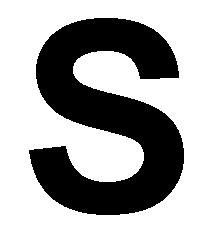
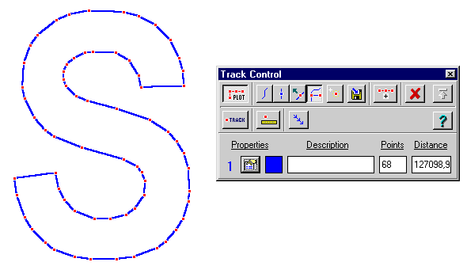
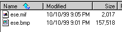

¿QUÉ
DIFERENCIAS HAY ENTRE UN MAPA CONVENCIONAL Y UN MAPA VECTORIAL?
- La respuesta
es: existen muchas diferencias
- Los recursos
en un ordenador que un mapa convencional (tipo Ráster) necesita son
muchísimo más grandes a la hora tanto de guardarlos en nuestro
disco duro como a la hora de usarlos en un programa que cuando usamos el mismo
mapa creado vectorialmente.
-
|
Mapa
Convencional (Ráster) |
Mapa
vectorial |
Espacio
en disco duro |
Muy Elevado(1) |
Muy bajo |
Espacio
en memoria |
Muy Elevado |
Muy bajo |
Resolución |
Muy elevada |
Muy baja
|
Procesamiento
(2) |
Muy lento |
Muy rápido |
Creación |
Dibujo
directo, escáner |
Proceso
digital o manual |
(1) Excepto si se usan algoritmos
de compresión incluidos en los formatos TIF, LZW, GIF, JPG, PNG, etc.
(2) Tiempo de carga en la memoria desde el disco duro, desplazamientos
en la pantalla, etc.
Vamos a ver un ejemplo:
- Lo primero que he hecho es crear
con el programa Paint Shop Pro un dibujo (mapa) que contiene una enorme letra
S. Después la he grabado en mi disco duro con el nombre ESE.BMP. He
usado el formato BMP a propósito porque no utiliza ningún sistema
de compresión, y se puede evaluar el espacio que va a ocupar en tanto
en el disco duro como en la memoria: exactamente 154kb, resultado de constituir
una matriz de 300X300ppp = 90.000 puntos más la información
que indica que está en formato BMP, el color, etc (ppp significa puntos
por pulgada). En la memoria ocupará esos 90.000 bits de memoria.

- A continuación, he creado
un mapa vectorial de esta imágen con ayuda del programa MapScan, y
lo he exportado y guardado en el disco duro de mi ordenador como ESE.MIF,
usando el formato vectorial MapInfo. Lo he hecho así a propósito
porque ahora vamos a ser capaz de obtener de esta imágen mucha información
con ayuda de OziExplorer. Para ello, importo la imágen como si de un
track se tratara. La información la vamos a obtener con ayuda de la
ventana de Track Control.

Ahora vemos que:
- La misma imagen de la letra
"S" está constituida por solo 68 puntos (no por 90000 puntos como
en la versión BMP), los cuales corresponden a los puntos rojos de
la imagen de la izquierda.
- la imágen se crea uniendo
estos puntos mediante líneas.
- Aunque no lo recoja OziExplorer,
el archivo vectorial puede contener información de que rellene el
interior de esta S con el color negro para darle un aspecto esencialmente
idéntico al del formato BMP.
- Toda esta nueva forma de representar
la letra S con sólo 68 puntos debe tener su ventaja (espacios en disco
y memoria) y desventajas (resolución).
- Aquí teneis un directorio
para que veais cuanto ocupa (en bytes) uno u otro formato de mapa.

Por cierto,
todos los archivos Track de OziExplorer podrían ser en realidad mapas
vectoriales. Si tuvieramos un mapa de España convencional, podriamos
crear un track con la figura de España que pudiera servirnos como un
mapa.
Escrito
por Antonio R. Franco el 11/10/99